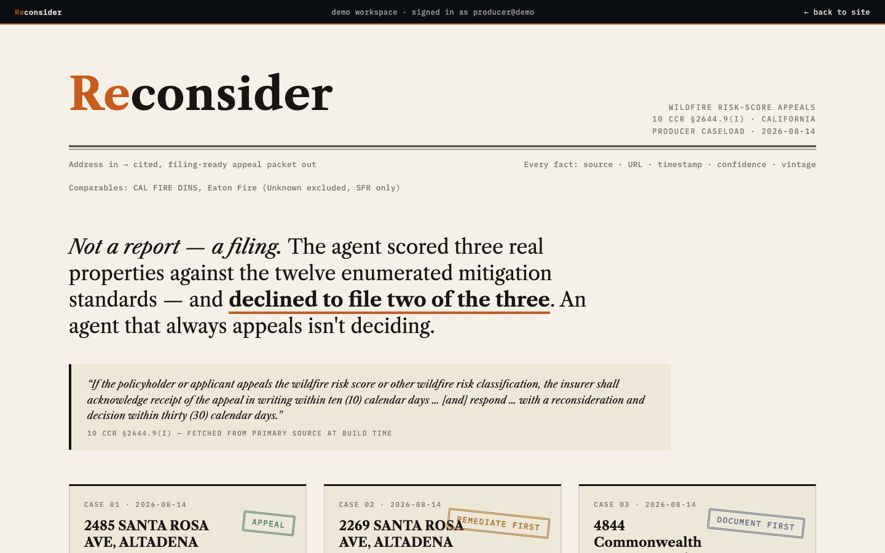

Reconsider assembles California wildfire insurance score appeals from the enumerated Safer-from-Wildfires standards — corroborated with CAL FIRE survivor data, every fact cited to its source. It decides whether an appeal is winnable, files the §2644.9 packet when it is, and tracks the insurer's statutory clock.

A report describes risk. A filing under §2644.9(i) starts a clock the insurer must answer in writing — 10 days to acknowledge, 30 to reconsider. Reconsider scored three real Altadena-area homes against the twelve enumerated mitigation standards and declined to file on two of them. An agent that always appeals isn't deciding.
Mireye /v1/fetch — 24 cited facts across two wildfire presets, each with source, timestamp, confidence, vintage.
CAL FIRE DINS comparables from the Eaton Fire — houses that survived with each hardening feature.
The home is scored against the twelve enumerated §2644.9(d)(1) mitigation standards — the legal argument.
Appeal · remediate first · or don't file yet. The agent returns a ranked gap list or an evidence checklist.
A §2644.9(k)(B) dollar-demand packet, and every statutory clock the producer must watch.
Fine-mesh vents and enclosed eaves documented. The one gap becomes an itemized §2644.9(k)(B) dollar demand.
Coarse vents, unenclosed eaves. Filing now would concede more than it claims — fixes ranked by real survival deltas.
No hardening documented either way. An appeal can't rest on exposure alone, so the agent returns an evidence checklist.
Mireye's cited parcel facts sit next to the regulation text (fetched from primary source at build time), a live statutory-clock engine, and CAL FIRE post-fire damage inspections — 7,893 survivors vs 9,419 destroyed.
The right to appeal exists in statute; the evidence assembly is the work nobody does, so the right goes unused and premiums stand. The core ember-vent effect even replicates in the Palisades Fire.
§2644.9(j) gives producers a 5-day statutory duty to forward a client's appeal — they're in the loop by law. Score appeals recur every policy year. A renewing wedge, not a one-time dispute.
Mid-build, the agent wanted a field Mireye doesn't have yet — distance to the nearest CAL FIRE
fire perimeter and last burn year — and filed it through /v1/field-requests. It doesn't
just consume the API; it extends it. Pending requests render in every packet as evidence in flight.